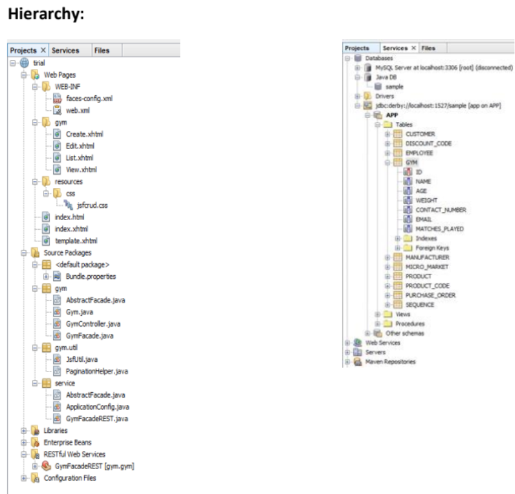
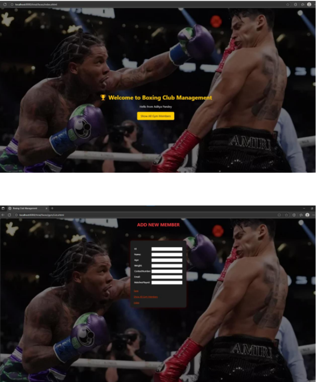

This project demonstrates the development of a RESTful Web Service for a Boxing Club Management System. The service allows managing boxer records, memberships, Trainers through REST Webservice. It demonstrates how admin can manage Members, Trainers and others work using HTTP methods such as GET, POST, PUT, and DELETE.
Technologies Used: RESTful Web Services, Java, JSON, HTTP

